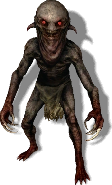

| MONSTRUO | TIPO | DEBILIDADES | RESISTENCIAS | HABITAT | FOTO |
|---|---|---|---|---|---|
| Ghoul | Necrófago | Plata,AC para Necrófago | Venenos | Cementerios, campos de batalla |  |
| Grifo | Hibrido | Aard,bomba colmena,AC* Hibridos | Fuego,veneno | Desiertos |  |
| Nekker | Ogroide | Plata,Fuego | Magia,fisico | Bosques |  |
| Leshen | Relicto | Señal de Igni,bomba de dimerita | Señal de Axia | Bosques |  |
| Basilisco | Draconido | Plata | Venenos | Cavernas y canales abandonados |  |
Referencias:AC: Aceite